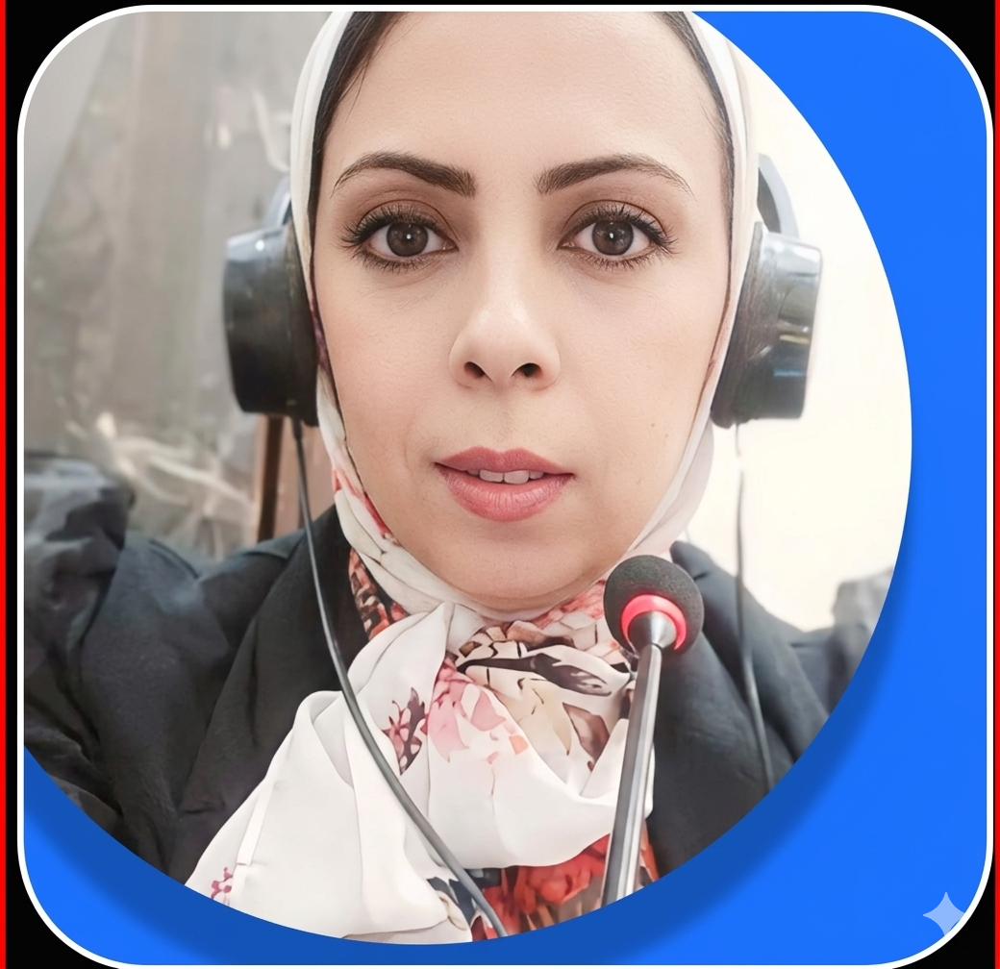

Expert Arabic ↔ English Conference Interpretation for International Events, Press Conferences, Business Meetings & More

Professional language solutions for your international communication needs
Real-time interpretation in soundproof booths for conferences, summits, and large-scale events.
Interpretation after the speaker pauses, ideal for business meetings and smaller gatherings.
Virtual interpretation services for online events via Zoom, Teams, or custom platforms.
Specialized interpretation for press conferences, TV interviews, and media coverage.
Need a customized solution for your event?
Discuss Your RequirementsRecognized credentials and continuous professional development
Always on time, fully prepared, and professionally equipped
Strict adherence to professional code of ethics and discretion
Beyond words — understanding context, tone, and cultural subtleties
Modern Standard Arabic & Dialects
Source / TargetBritish & American English
Source / TargetBidirectional interpretation with native-level fluency in both languages
Watch a real example of my simultaneous interpretation work
Let's discuss your upcoming event and how I can help make your communication seamless.